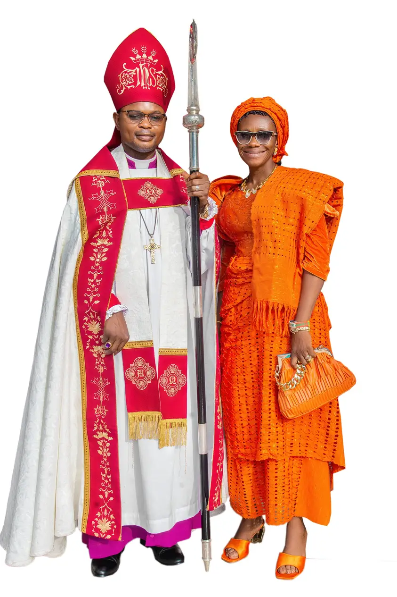

Our Faith
Following Jesus Christ and sharing the message of the Gospel through word and action.
A Christian community committed to worship, spiritual growth, evangelism, and service.
The Anglican Diocese of Zaki-Biam is a Christian community dedicated to worship, discipleship, evangelism, and compassionate service. We welcome everyone who wishes to grow in faith and participate in the life of the Church.
Following Jesus Christ and sharing the message of the Gospel through word and action.
Encouraging Christian discipleship, worship, evangelism, and service to others.
Building fellowship, unity, compassion, and meaningful community relationships.

The Bishop provides spiritual leadership and guidance to the diocese, encouraging worship, discipleship, evangelism, and service.
The Bishop's name and official message can be added after the details have been verified.
Discover opportunities to grow spiritually and serve alongside fellow Christians.
Growing together through worship, prayer, and Scripture.
Encouraging fellowship, spiritual growth, and service.
Helping young people develop faith, character, and purpose.
1 Corinthians 16:14
Have a question or need information? Send us a message using the form.
Official contact details and service times can be added here once verified.